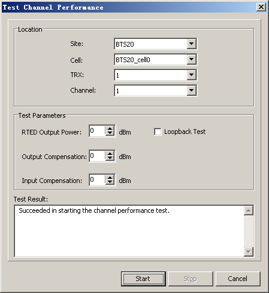

This describes how to test the parameters of TRX module, such as channel BER and transmission power to test the transmission quality of the channel.
Prerequisites
- The LMT runs normally.
- The communication between the LMT and the BSC is normal.
- The communication between the BSC and the BTS is normal.
Context
Only the BTS20 support this operation.
Procedure
- Choose .
- Set parameters in the Location and Test Parameters areas, and then click Start. The results are displayed, as shown in Figure 1.
Figure 1 Testing channel performance
- Click Stop.
Copyright © Huawei Technologies Co., Ltd.